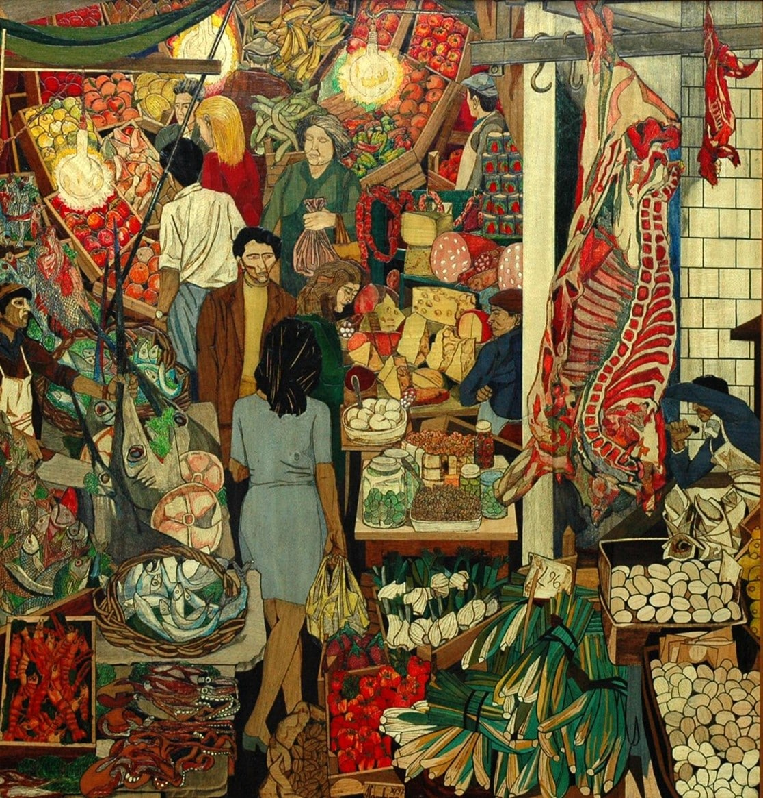
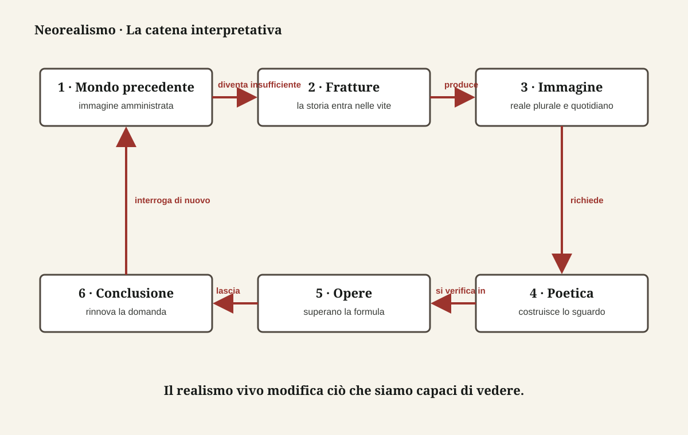

Letteratura italiana · quinto anno
L’Italia entra
nell’inquadratura
Il Neorealismo non copia la realtà: decide da dove guardarla, a chi dare voce e quale responsabilità affidare al racconto.

Tesi guida
Non una scuola compatta, ma una costellazione di risposte
Guerra, Resistenza e dopoguerra rendono insufficiente l’arte separata dalla vita. Scrittori e registi cercano una nuova comunicazione con il pubblico; ma Calvino, Pavese, Vittorini, Fenoglio, Levi, Rossellini, De Sica e Visconti non usano una formula comune. Li unisce una tensione morale; li distingue la forma con cui trasformano i fatti in conoscenza.
Fonti e criterio critico
La fonte principale è la dispensa fornita dal docente, integrata e verificata con voci Treccani sul Neorealismo, sulla lingua del cinema e su Roberto Rossellini, con la prefazione del 1964 di Italo Calvino al Sentiero dei nidi di ragno e con studi critici indicati nella bibliografia finale.
Una precisazione necessaria: autenticità non significa assenza di artificio. Luoghi reali e attori non professionisti convivono con sceneggiatura, montaggio e frequente postsincronizzazione del suono. La PWA distingue perciò il documento dalla forma che lo rende leggibile.
Verifica facoltativa
I sei nessi essenziali
Una domanda per movimento. Non premia la memoria di date isolate: controlla se sai ricostruire la traiettoria.
